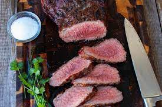

This grilled tri-tip recipe with a tasty dry rub tastes gourmet but is actually very easy to make. It's a perfect dinner for guests. It is sure to impress!
Using a sharp knife, cut small slits in the top of the roast; insert garlic slices into the slits.
Mix salt, pepper, and garlic salt together in a small bowl; rub all over the tri-tip and refrigerate for at least 1 hour or up to 1 day. Remove tri-tip from the refrigerator about 20 minutes before grilling.
Preheat an outdoor grill for high heat and lightly oil the grate.
Place the meat directly above the flame to sear the meat and lock in the juices, about 5 to 10 minutes per side.
Turn the grill down to medium heat and continue to cook, turning occasionally, for another 25 to 30 minutes. An instant-read thermometer inserted into the center should read 145 degrees F (63 degrees C) for medium-rare. Let stand, covered loosely with aluminum foil, for 5 minutes before slicing.